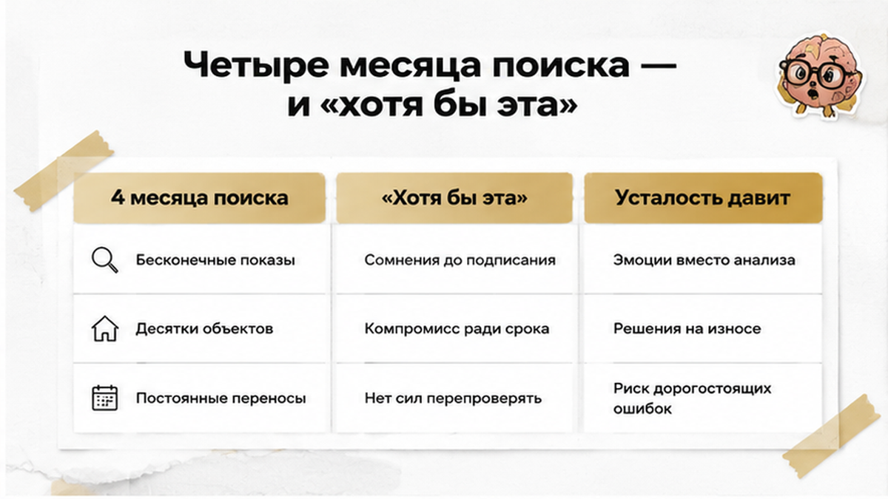
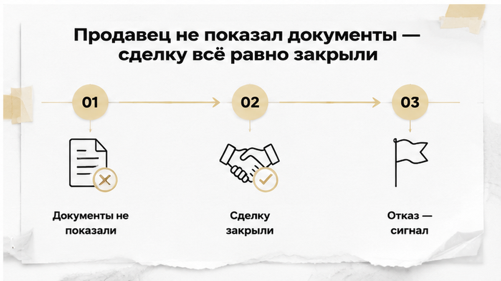
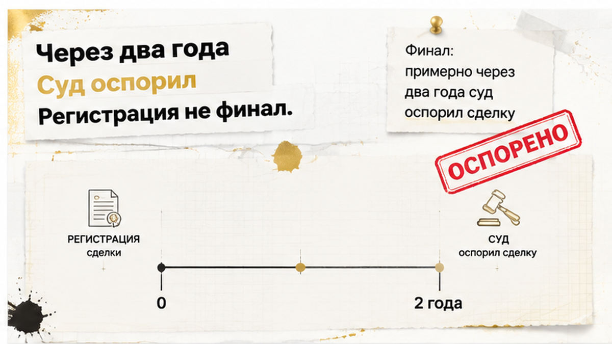
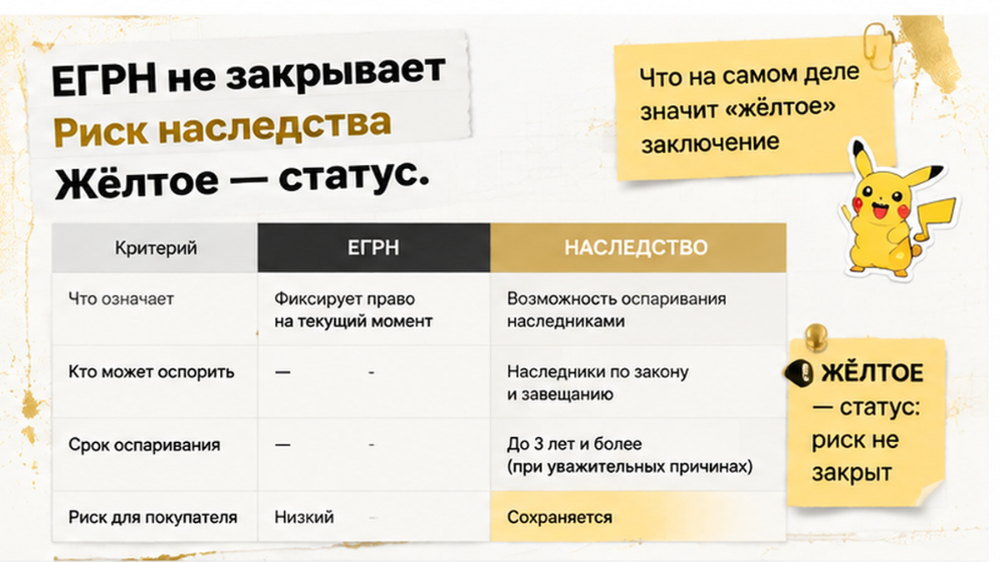
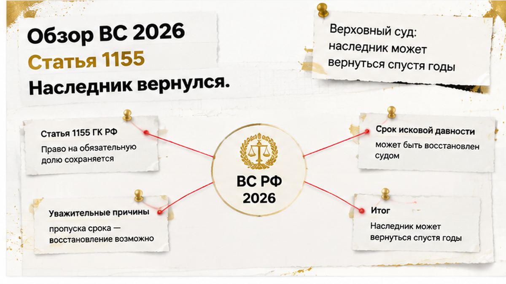
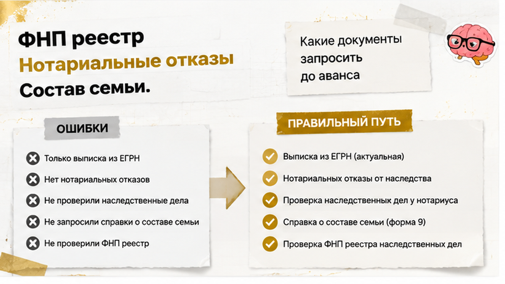

Семья в Тюмени искала вторичку четыре месяца. К концу лета их список требований сжался с «нужен наш район, средний этаж, окна во двор» до короткого «хотя бы эта». Квартира, на которой они остановились, пришла с жёлтым юридическим заключением: риск третьего наследника не снят, а документы, которые могли бы его закрыть, продавец так и не показал. Сделку всё равно провели — деньги ушли, право зарегистрировали, в детской поклеили обои. Примерно через два года суд эту сделку оспорил. С вами Святослав Шакин, личный риелтор в Тюмени, и я разбираю эту историю не чтобы напугать вторичкой, а чтобы показать ту самую точку, где ещё можно было остановиться, — и почему уставший покупатель проходит её мимо.
Святослав Шакин, The Риэлтор, Тюмень. Разбираю такие сделки до аванса — пишите, если устали от поиска и сомневаетесь в жёлтом заключении.

Механику, о которой говорят юристы по сделкам, я вижу в Тюмени каждый сезон. Покупатель ищет три-четыре месяца, и за это время его требования не уточняются — они снижаются. Вместо «хочу этот район» появляется «ну, транспортная доступность нормальная». Вместо чистой истории объекта — «там вроде всё оформлено, свидетельство есть».
Причины наслаиваются друг на друга. Подходящих объектов в конкретном бюджете мало. Цены за время поиска подросли. Бюджет тает. А сверху ложится обычная человеческая усталость: просмотры по субботам, переписки, сорвавшиеся варианты, «извините, вчера внесли аванс».
Формула звучит неприятно, но она рабочая: уставший покупатель — самый опасный покупатель. Опасен он не для продавца, а для себя. На четвёртом месяце человек перестаёт сравнивать риски двух квартир — он хочет закончить поиск. Не купить, а именно закончить.
И тогда звучит просьба, которую невозможно выполнить: «сделайте так, чтобы мы безопасно купили эту квартиру». Честный ответ у меня один: гарантировать безопасность нельзя. Можно выявить риски, оценить их и назвать своими именами — а решение остаётся за покупателем. Разница между этими двумя формулировками и есть вся разница между спокойной сделкой и судом через два года.
Похожее давление я разбирал в истории, где скидку в два миллиона обещали, а в квартире прятали риск. Срок «решайте до пятницы» всегда стоит дешевле, чем то, что этим сроком прикрывают.
В этой истории риск был назван прямо, без обтекаемых формулировок: третий наследник. Не тот, кто уже участвовал в оформлении, а тот, кто по документам мог наследовать, но в деле так и не появился.
Такой риск не устраняется текстом договора. И не устраняется словами продавца «других претендентов нет, я вам как есть говорю». Он закрывается только двумя способами: подтверждающими документами — либо осознанным решением не продолжать сделку.
Обычный покупатель смотрит в выписку ЕГРН, видит «обременений нет» и выдыхает. Я в этот момент спрашиваю другое: кто ещё был в семье наследодателя, у какого нотариуса велось дело, почему из троих детей право оформил один. Свидетельство о праве на наследство подтверждает право того, кто его получил, — и только. Оно не доказывает, что других наследников не существует. Реестр показывает переходы права, а не семейную историю.
Поздний наследник в практике бывает трёх типов: не заявившийся вовремя, восстановивший срок и имеющий право на обязательную долю. Другой наследственный сюжет — когда сын от первого брака не отказался от наследства — устроен иначе: там фигура известна заранее, её видно. Третий наследник тем и неудобен, что в документах его нет.

Дальше произошло самое обычное. Юрист составил перечень: чем именно можно закрыть вопрос третьего наследника. Продавец эти документы не предоставил.
Не отказался в грубой форме, не пропал. Просто переносил: «архив не отвечает», «сестра в отъезде», «на той неделе привезу». Покупатели, которые к тому моменту искали четвёртый месяц, прочитали это как бытовую заминку. А это был не быт.
Назову прямо: отказ продавца предоставить документы — самостоятельный неблагоприятный сигнал. Не «особенность характера», не нейтральное обстоятельство. Когда сторона, у которой документы есть или которая может их получить, их не даёт, отсутствие документов перестаёт быть техническим пробелом.
Компенсировать этот пробел расчётами не выйдет. Аккредитив, сервис безопасных расчётов, титульное страхование — вещи полезные, но они решают другую задачу: безопасность перевода денег, порядок раскрытия, частичное покрытие убытков по условиям полиса. Ни один из них не превращает нераскрытые наследственные обстоятельства в проверенные. Схема расчётов не отвечает на вопрос, кто ещё имел право на эту квартиру со дня открытия наследства.
Сделку провели. Деньги ушли, регистрация прошла, ключи получили. И вот что тут важно: после перевода денег переговорная позиция покупателя резко слабеет. Я показывал это на другом сюжете, где расписку на квартиру написали, а денег на счёте не оказалось. До аванса вы выбираете. После — вы объясняете.

В этой истории нет драматичного звонка и письма с угрозами. Есть тишина, которая длится долго.
Семья заехала, сделала ремонт в детской, поменяла входную дверь, привыкла к району, который поначалу казался компромиссом. И примерно через два года после регистрации сделка была оспорена в суде — ровно по тому основанию, которое юрист заранее вынес в жёлтое заключение. По незакрытому риску третьего наследника.
Здесь я обязан сказать без красивой концовки. Я не называю ни суд, ни номер дела, ни фамилии, ни адрес, ни цену: это не публичный акт с реквизитами, который можно процитировать, а линия, восстановленная по обращениям и по тому, что видно со стороны сопровождения сделок. «Через два года» — часть этой восстановленной хронологии, а не подтверждённая единым открытым документом дата. Мне важен не протокол, а механика: риск, который назвали до аванса, реализовался тогда, когда все формальности были давно закрыты.
И самое неприятное для покупателя. К моменту спора деньги уже не «где-то в процессе» — они у продавца и, как правило, потрачены. Даже если покупатель в итоге отстаивает часть своих интересов, возврат денег — это отдельная задача, отдельный процесс и отдельные годы. Расписка, чек, платёжное поручение доказывают, что вы заплатили. Они не гарантируют, что вам вернут.
Отдельно проговорю, чтобы не сеять панику: наличие наследственного риска не означает, что поздний наследник автоматически побеждает и забирает квартиру. Суд смотрит на его основания, на обстоятельства сделки, на поведение сторон, на добросовестность и осмотрительность покупателя. Просто в этой истории покупателю нечем было свою осмотрительность подтвердить: документов ему не дали, а он согласился всё равно.

«Жёлтое заключение» — термин рыночной практики, а не категория Гражданского кодекса. Ни в одном законе нет градации «зелёное — жёлтое — красное».
Это способ юриста коротко сказать заказчику: сделка технически возможна, но конкретный риск не снят. Не «почти зелёное». Не «зелёное с оговоркой». Жёлтое — отдельный статус, и он означает, что осталась незакрытая точка, по которой возможен спор. Юрист фиксирует вероятность спора; он не производит безопасность как товар.
Чаще всего мне приходится повторять вторую вещь: чистая выписка ЕГРН не устраняет наследственный риск. В ней нет графы «все наследники учтены». Она показывает, кто собственник сейчас и какие обременения зарегистрированы, — и всё.
| Инструмент | Что он действительно закрывает | Что остаётся открытым |
|---|---|---|
| Выписка ЕГРН без обременений | Кто числится собственником и что зарегистрировано на дату выписки | Состав наследников, непринятое вовремя наследство, обязательная доля |
| Аккредитив или сервис безопасных расчётов | Порядок и момент передачи денег между сторонами | Нераскрытые наследственные обстоятельства — расчёт не делает их проверенными |
| Титульное страхование | Компенсация на условиях конкретного полиса | Сам факт спора и необходимость его пройти; исключения и оговорки полиса |
| Заверение продавца «других наследников нет» | Практически ничего — это слова в тексте договора | Всё, что должны были подтвердить документы, включая нотариальные отказы |
И наблюдение, которое я даю как личное, а не как рыночную статистику: доля негативных заключений по потоку сделок выросла примерно с 3–5% до порядка 10%. Это не официальные цифры по стране. Но вывод практический: вероятность, что именно ваш четвёртый месяц поиска закончится жёлтым заключением, стала выше, чем пару лет назад.

Летом 2026-го вышел документ, который ложится на эту историю как по линейке. Верховный суд утвердил обзор судебной практики № 12/2026 — постановлением Президиума ВС РФ от 1 июля 2026 года № 15А/2026. В пункте 6 описана наследница, которая спустя почти четыре года после смерти наследодателя подтвердила принятие наследства и добилась возобновления процесса в порядке процессуального правопреемства.
Логика там не хитрая. Пункт 4 статьи 1152 ГК РФ: принятое наследство принадлежит наследнику со дня открытия наследства. Право возникло не в тот момент, когда человек наконец пришёл и заявил о себе, а раньше — в день смерти. Поэтому сам факт «прошло много лет» ничего автоматически не закрывает.
Обычный покупатель считает так: «сделка зарегистрирована, три года прошло — всё, давность вышла». Я считаю иначе, потому что видел, как это работает: отсчёт может идти с момента, когда человек узнал о нарушении своего права, а не с даты вашей регистрации. И когда требования заявляют по основаниям вроде статьи 178 ГК РФ, суд смотрит на добросовестность и осмотрительность покупателя — на то, что вы сделали до сделки, а не на то, что почувствовали после.
Две оговорки, без которых обзор читают неправильно. Он не значит, что любую сделку через два или четыре года обязательно отменят. И он не является страховкой для покупателя. Он подтверждает мысль скромнее, но практичнее: запись в реестре не закрывает наследственные и судебные вопросы. Ровно об этом соседний разбор — ипотеку одобрили, а регистрацию отменили из-за строки в ЕГРН: строка фиксирует состояние, а не иммунитет.

Практика здесь сводится к одному вопросу: чем продавец может подтвердить, что кроме него на эту квартиру никто не заявится. Не заверить словами, не «прописать в договоре» — показать документ. Если такие документы есть, их собирают за несколько дней, и жёлтое заключение получает шанс стать зелёным. Если их нет — вы решаете не про цену, а про риск.
Минимальный набор, который я прошу до аванса, когда квартира пришла продавцу по наследству:
Каждая бумага отвечает на свой узкий вопрос и молчит про остальные. Свидетельство о праве на наследство подтверждает, что продавец наследство принял, — и всё; оно не доказывает, что других наследников нет.
| Документ | Какой вопрос закрывает | Что остаётся открытым |
|---|---|---|
| Свидетельство о праве на наследство | Продавец принял наследство и оформил право | Есть ли другие наследники и что с их сроками |
| Выписка из ЕГРН | Собственник, обременения, запреты на дату выписки | Основание права и наследственная история |
| Сведения из реестра наследственных дел ФНП | Велось ли дело и у какого нотариуса | Полный круг лиц, имеющих право обратиться |
| Нотариальный отказ от наследства | Конкретный человек от наследства отказался | Те, кто вообще не заявлялся и о ком вы не знаете |
| Документы о составе семьи наследодателя | Кто входил в круг возможных наследников | Обязательная доля и восстановление срока по статье 1155 ГК РФ |
Про инструменты, которые часто предлагают вместо документов, скажу коротко. Аккредитив и сервис безопасных расчётов — это про то, чтобы деньги не ушли раньше регистрации; такую механику я разбирал в истории, где расписку на квартиру написали, а денег на счёте не оказалось. Титульное страхование — перенос части финансовых последствий на страховщика при соблюдении условий полиса. Ни то, ни другое не превращает нераскрытые наследственные обстоятельства в проверенные.
И правило, которое я вывел за годы работы: отказ продавца показать документы — это самостоятельный сигнал, а не особенность характера. У продавца, у которого всё в порядке, нет причин прятать имя нотариуса и даты жизни наследодателя. Когда вместо бумаг вы слышите «зачем вам это, все вопросы решены» — ответ вы уже получили, просто не в той форме, в которой хотели.
Дальше остаётся два честных варианта: осознанно идти в сделку, понимая, чем именно рискуете и что будете делать в суде, — или не продолжать. Третьего варианта, где юрист «сделает так, чтобы было безопасно», не существует.
Если заключение жёлтое, а поиск уже четвёртый месяц — вы всё равно внесли бы аванс, чтобы закончить?
Теперь про рынок, на котором эта история вообще стала возможной. В июне 2026 года медианная цена вторичной квартиры в Тюмени была около 6,5 млн рублей — без изменения к маю. При этом город лидировал среди крупных по объёму экспозиции вторички: порядка 509 тыс. кв. м в продаже. На бумаге — рынок покупателя: выбирай.
На практике объём экспозиции и число квартир с приемлемой историей в вашем бюджете — два разных числа. Сначала вычтите всё, что не подходит по площади, состоянию, локации, школе и логистике семьи. Потом — то, что не проходит по деньгам и требованиям банка. И только после этого начинается юридический фильтр: наследство без документов, неполные отказы, свежие переходы права, споры между родственниками. После трёх фильтров у семьи с конкретным бюджетом остаётся не 509 тысяч квадратных метров, а три-четыре варианта. Один из них — с жёлтым заключением.
Добавьте динамику спроса. По данным 72.ru от 9 июля 2026 года, спрос на ипотеку для вторички в Тюмени стал рекордным за 12 месяцев: средняя сумма кредита около 3 млн рублей, это на 57% больше год к году, средняя цена двухкомнатной — порядка 6,28 млн. URA.news фиксировала, что сделок со вторичкой в июле 2026-го было примерно вдвое больше, чем в январе, — на фоне снижения ключевой ставки и перетока денег с депозитов.
Что это значит для человека на четвёртом месяце поиска? Что по тому же объекту ходят другие люди с одобренной ипотекой, и продавец это чувствует. Отсюда «решайте до вечера» и «есть второй покупатель, он без вопросов». Про такое давление я писал в разборе, где скидку в два миллиона обещали, а в квартире прятали риск: срочность и скидка почти всегда стоят ровно столько, сколько стоит непроверенное обстоятельство.
Оговорка обязательна: все эти цифры объясняют, почему на покупателя давит время, но ничего не говорят о безопасности конкретной квартиры. Рекордный спрос не делает объект чище. Рост числа сделок означает лишь, что через тот же выбор проходит больше людей — и часть из них проходит его уставшими. Мой единственный аргумент против усталости простой: срок поиска можно продлить на месяц, а срок наследственного спора вы себе не выбираете.
Материал проверен: Святослав Шакин, личный риэлтор в Тюмени. Ориентир для покупателя, не индивидуальная юридическая консультация.